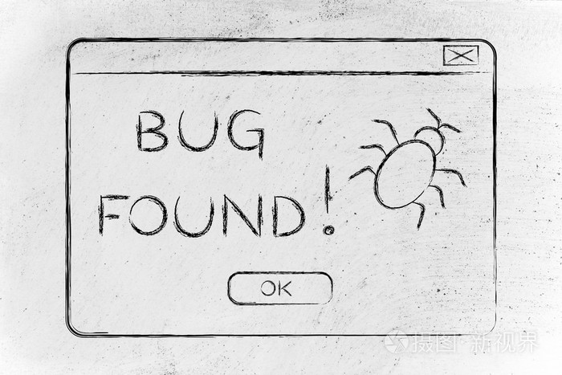

发现游戏bug是否要举办？

1947年9月9日，葛丽丝·霍普使用的Mark Ⅱ出现故障，整队团队都搞不清电脑为何不能正常运作，导致工作无法进行。经过仔细排查，发现原来有一只飞蛾意外飞进继电器才引起了故障，团队很快排除错误，并在日志本记录这件事。从此，人们逐渐开始使用“Bug”（原意“虫子”）来描述计算机程序的隐错，与之对应的“Debug”则用于表示排除计算机程序错误，而葛丽丝·霍普也因此成为了发现Bug的第一个程序员。
以上便是Bug的来由。
程序和Bug是一个从始至终都绕不开的话题，它们如影随形、相生相伴，几乎可以断言，世界上不存在没有Bug的程序，是个程序就会有Bug。
与Bug最直接接触的群体，被称为程序员，他们可能天天都在与Bug打交道，但即使程序员与Bug之间存在着许多爱恨情仇，它也并不是程序员才会遇见的专属物。
在这个计算机普及和各种App泛滥的时代，Bug早已不是什么稀奇的东西，相反，它很常见，就潜伏在我们的日常生活中，或许它刚刚正从身边经过，只是我们没有留意到它。
常见应用程序的Bug